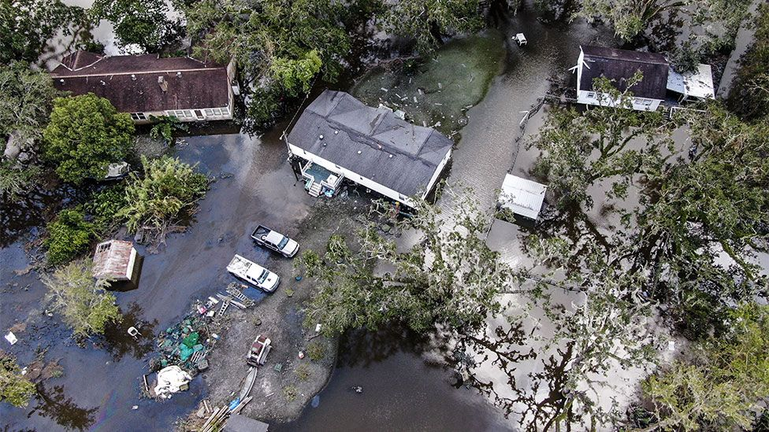
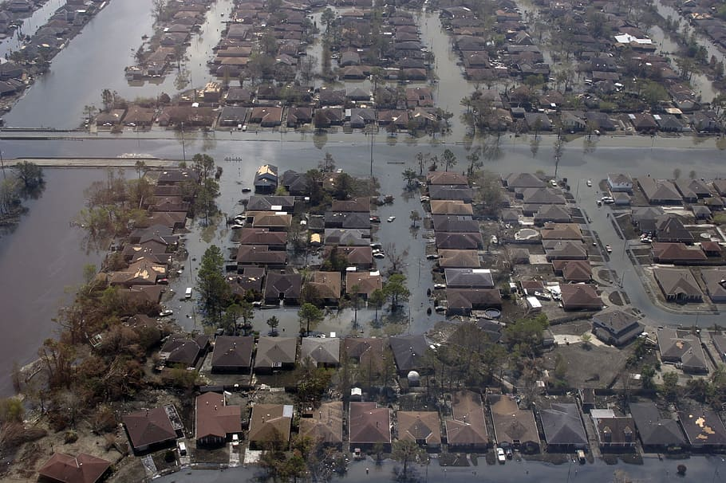

Satellite Images of Hurricane Damage
What is it about?
After a hurricane, damage assessment is critical to emergency managers and first responders so that resources can be planned and allocated appropriately. first step is to detect detect damaged Areas by using damage detection via image classification algorithms.
How i did it?
I trained the CNN model using 10,000 images, out of which, 5000 belonged to damaged class and other 5000 belonged to undamaged class.
Why trust this model?
Accuracy: 95.5 %
Link of the Dataset used